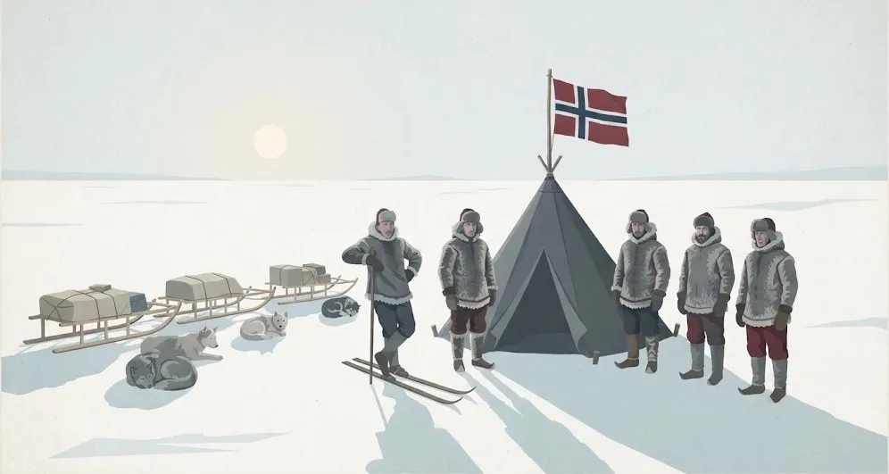
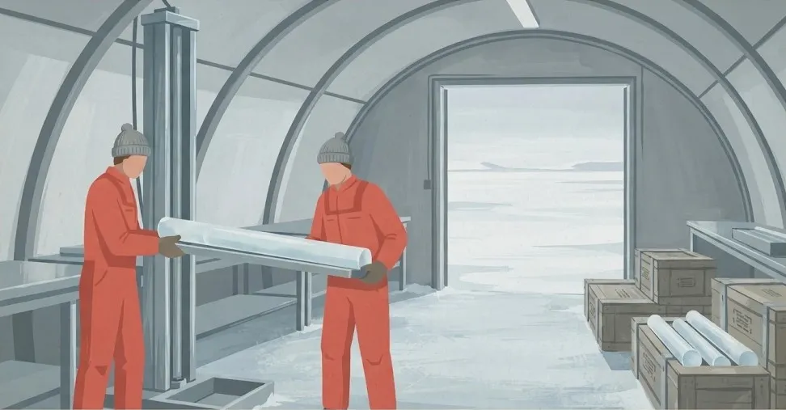
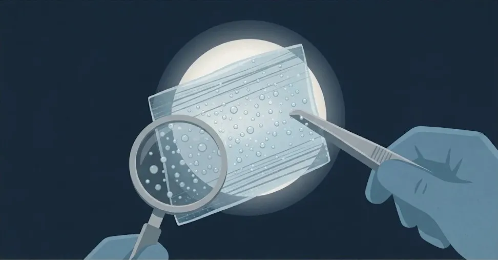
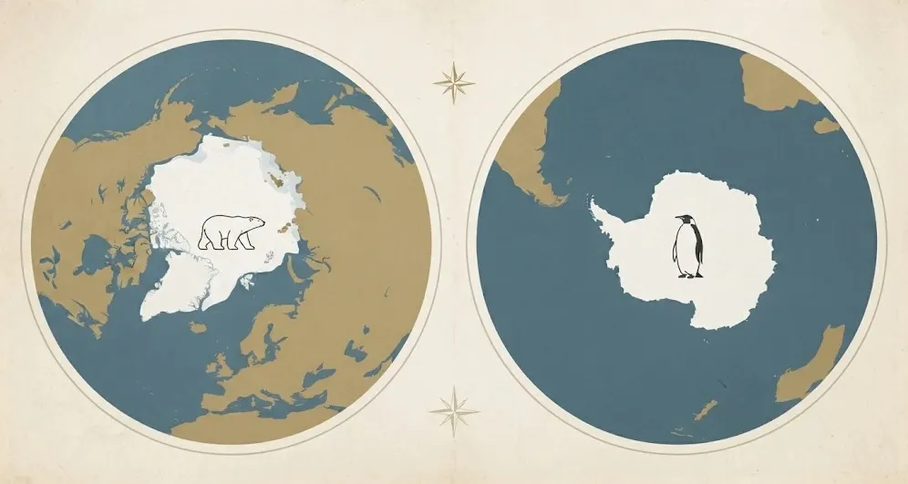
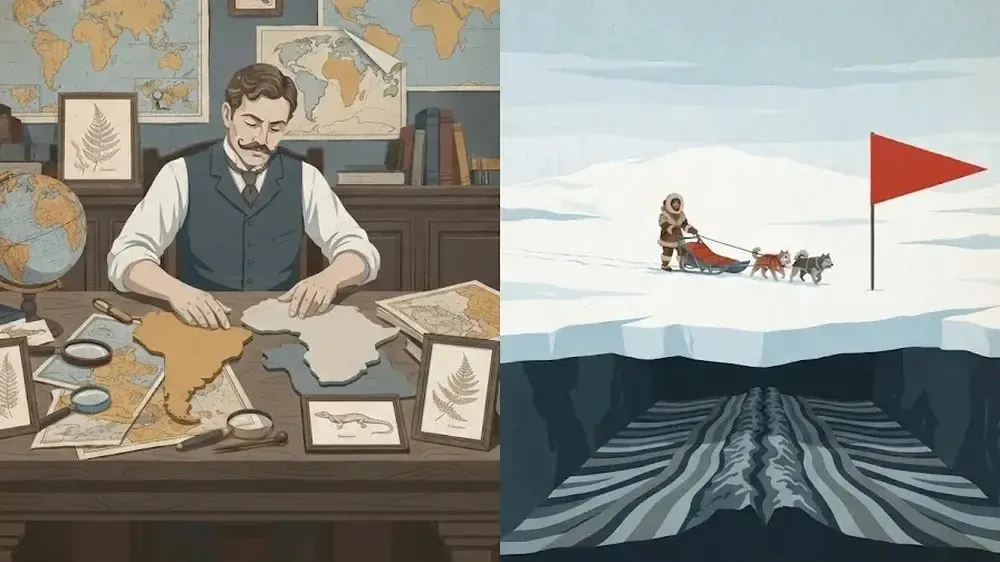
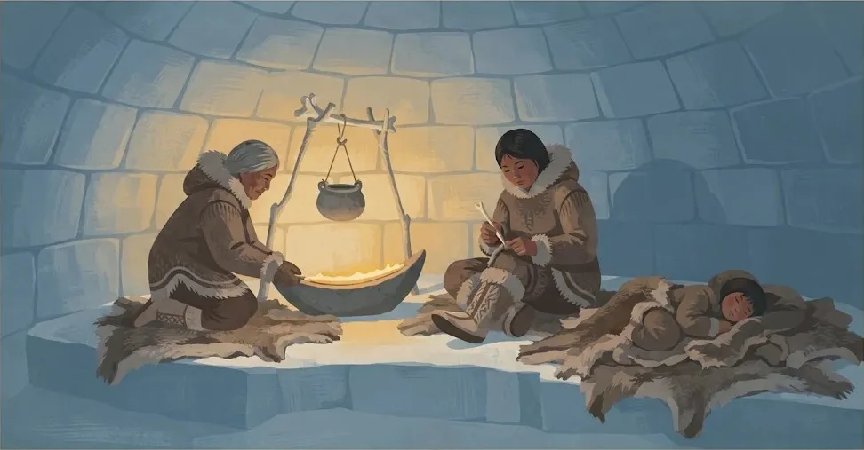
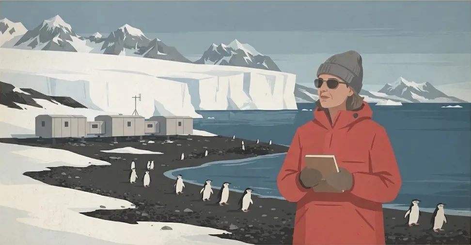

Hace quince días cruzamos el Pacífico. En este número viajamos a los dos extremos del planeta: el Ártico, un mar helado rodeado de tierras, y la Antártida, una tierra helada rodeada de mar. Son los sitios más fríos, más secos y más vacíos del mundo, y fueron los últimos a los que llegó el ser humano.
El 14 de diciembre se cumplen 115 años de la llegada de Amundsen al Polo Sur. Lo contamos junto a la tragedia de Scott y la odisea de Shackleton. Y además, un hielo que guarda el aire de hace un millón de años, los inuit, que vivieron siempre donde nadie más pudo, y una oceanógrafa de Barcelona que acabó dirigiendo una base en la Antártida. Abrigaos bien.
En el verano antártico de 1911, dos expediciones salieron hacia el mismo punto del mapa: un noruego con perros y un británico con ponis, motores y hombres tirando de trineos. Uno volvió sin un rasguño. El otro no volvió.

Amundsen y sus compañeros en el Polo Sur, el 14 de diciembre de 1911.
Un cambio de planes en secreto
Roald Amundsen llevaba toda su vida preparándose para el Polo Norte. Había pasado dos inviernos entre los inuit del Ártico canadiense aprendiendo a vestir pieles, a construir refugios de nieve y a conducir perros. Pero en 1909 llegó la noticia de que dos estadounidenses, Frederick Cook y Robert Peary, decían haber llegado ya al Polo Norte.
Amundsen no dijo nada a nadie. Cargó su barco, el Fram, como si fuera al norte, y en la isla de Madeira reunió a la tripulación y le anunció el cambio: iban al sur. Desde allí mandó un telegrama al capitán británico Robert Falcon Scott, que ya iba camino de la Antártida: «Me permito informarle de que el Fram se dirige a la Antártida. Amundsen». Era una carrera, aunque solo uno de los dos lo había decidido.
Dos maneras de viajar
Amundsen montó su campamento, Framheim, en la bahía de las Ballenas, sobre la gran barrera de hielo de Ross, casi cien kilómetros más cerca del polo que Scott. Lo apostó todo a los perros: casi un centenar de perros de Groenlandia, esquís y trineos ligeros. Sus hombres eran esquiadores expertos, y él había aprendido de los inuit que en el hielo se viaja sin sudar, porque el sudor se congela dentro de la ropa.
Scott, en el cabo Evans, combinó todo lo que tenía: dos trineos de motor, ponis de Siberia, algunos perros y, sobre todo, hombres tirando de los trineos con arneses, como se hacía en la Marina británica. Los motores se rompieron a los pocos días. Los ponis se hundían en la nieve blanda y sufrían con el frío; hubo que matarlos por el camino. Al final, sus hombres arrastraron ellos mismos unos noventa kilos por cabeza durante cientos de kilómetros.
Perros por carne
El 20 de octubre de 1911 salieron de Framheim cinco hombres —Amundsen, Olav Bjaaland, Helmer Hanssen, Sverre Hassel y Oscar Wisting— con cuatro trineos y 52 perros. El plan era duro y estaba calculado: a medida que los trineos se aligeraban, los perros que sobraban se sacrificaban y servían de comida a los demás y a los hombres. Al pie de la gran meseta, tras subir el glaciar Axel Heiberg, mataron veinticuatro de una vez. Llamaron a aquel sitio «la Carnicería».
El 14 de diciembre de 1911, a media tarde, los cinco plantaron la bandera de Noruega en el Polo Sur. Dejaron una pequeña tienda, a la que llamaron Polheim, con una carta para el rey Haakon y una nota para Scott pidiéndole que la hiciera llegar si ellos no volvían. Volvieron. El 25 de enero de 1912 entraron en Framheim con once perros, en buena forma, después de casi 3.000 kilómetros.
Los hombres de Scott, tirando ellos mismos del trineo en la meseta polar.
«Qué lugar tan horrible»
El 17 de enero de 1912, treinta y cuatro días después, Scott, Edward Wilson, Henry Bowers, Lawrence Oates y Edgar Evans llegaron al polo. Ya de lejos habían visto un punto negro en la nieve: una bandera atada a un trineo, huellas de esquís y de perros.
«Dios mío, qué lugar tan horrible, y qué terrible haber llegado hasta aquí sin la recompensa de ser los primeros.»Diario de Robert F. Scott, 17 de enero de 1912
La vuelta fue una agonía. Evans, el más fuerte, se golpeó la cabeza en el glaciar y murió el 17 de febrero. Oates tenía los pies congelados y sabía que retrasaba a los demás. Una mañana de marzo, en plena ventisca, salió de la tienda diciendo: «Voy a salir un momento; puede que tarde». No lo encontraron nunca. Scott, Wilson y Bowers siguieron hasta que una tormenta los dejó atrapados en su tienda, a solo 18 kilómetros de un depósito de comida. La última anotación de Scott es del 29 de marzo.
Los encontraron en noviembre. En el trineo llevaban todavía 16 kilos de rocas que habían recogido para los geólogos. Entre ellas había fósiles de Glossopteris, una planta de clima templado. La Antártida, mucho antes, había tenido bosques.
La carrera en cifras
34días de ventaja de Amundsen sobre Scott
52 → 11perros que salieron y perros que volvieron con Amundsen
97días que tardó Amundsen en ir y volver
18 kmdel depósito de comida murieron Scott, Wilson y Bowers
Con el Polo Sur ya conquistado, Ernest Shackleton se propuso cruzar la Antártida de punta a punta. No llegó a pisarla. Pero lo que hizo en su lugar es una de las mayores hazañas de supervivencia de la historia.
El Endurance, atrapado por el hielo del mar de Weddell en 1915.
Atrapados en el mar de Weddell
El Endurance salió de la isla de Georgia del Sur el 5 de diciembre de 1914 con 28 hombres. En enero de 1915 el hielo del mar de Weddell se cerró alrededor del barco y ya no lo soltó. Pasaron el invierno a la deriva, jugando al fútbol sobre el hielo y cuidando a los perros. En octubre el hielo empezó a apretar el casco, que crujía como si gritara. El 21 de noviembre de 1915 el Endurance se hundió.
Ochocientas millas en un bote
Vivieron meses acampados sobre el hielo flotante, comiendo focas y pingüinos, hasta que llegaron en tres botes a la isla Elefante, un peñasco deshabitado. Nadie sabía que estaban allí. Shackleton eligió a cinco hombres y salió en el bote más grande, el James Caird, de siete metros, hacia Georgia del Sur: unas ochocientas millas, unos 1.300 kilómetros, por el mar más bravo del mundo. Tardaron dieciséis días. Después cruzaron a pie las montañas heladas de la isla, sin mapa, durante treinta y seis horas, hasta la estación ballenera de Stromness.
El James Caird entre las olas del océano Austral.
Todos vivos
Shackleton intentó tres veces volver a por los veintidós hombres de la isla Elefante. El hielo no le dejó. A la cuarta, el 30 de agosto de 1916, lo consiguió a bordo de un pequeño remolcador de la Armada de Chile, el Yelcho, al mando del piloto Luis Pardo. Los náufragos llevaban cuatro meses y medio viviendo bajo dos botes puestos del revés. Se salvaron todos.
El Endurance apareció en marzo de 2022, a 3.008 metros de profundidad, casi intacto, con su nombre todavía legible en la popa.
En el centro de la Antártida hay hielo de más de tres kilómetros de espesor. Cada capa es una nevada de hace miles de años. Y dentro, atrapadas en burbujas diminutas, hay muestras del aire que respiraba el planeta antes de que existiéramos.

Científicos sacan un testigo de hielo en la meseta antártica.
Nieve que no se derrite
En el interior de la Antártida casi no nieva: es un desierto. Pero lo poco que cae no se derrite nunca. Cada año una capa fina se posa sobre la anterior y, con el peso de las siguientes, se va apretando. A unos ochenta metros de profundidad la nieve ya se ha convertido en hielo, y los huecos que quedaban entre los copos se cierran. Dentro queda encerrado un poco del aire de aquel momento, como en una botella con tapón.
Taladrar el tiempo
Para leer ese archivo, los científicos perforan el hielo con un taladro hueco y sacan cilindros de unos diez centímetros de grosor: los testigos de hielo. Se cortan en trozos de un metro, se guardan a veinte o treinta grados bajo cero y viajan a laboratorios de medio mundo. Cuanto más abajo, más antiguo.
El proyecto europeo EPICA perforó entre 1996 y 2004 en la Cúpula C, un punto de la meseta antártica a más de 3.200 metros de altitud y a unos cincuenta grados bajo cero de media. Llegó hasta los 3.270 metros, casi a la roca. El hielo del fondo tenía unos 800.000 años.
Un termómetro y una botella
Del hielo se saca la temperatura de cada época: el agua de las nevadas cambia un poco su composición según haga más frío o más calor, y eso se puede medir. Y de las burbujas se saca el aire: cuánto dióxido de carbono y cuánto metano había.
Lo que contaron los testigos fue un ritmo. En 800.000 años la Tierra pasó por ocho glaciaciones, separadas por épocas templadas más cortas, cada unos cien mil años. Y la temperatura y el dióxido de carbono subían y bajaban juntos. En las glaciaciones había unas 180 partes por millón de CO₂ en el aire; en las épocas cálidas, unas 280 o 300. Nunca más.
Hoy pasamos de 420.

Una lámina fina de hielo antiguo con sus burbujas de aire, vista a contraluz.
Lo que también queda dentro
El hielo guarda más cosas: rastros de grandes erupciones, como la del Tambora en 1815, que sirven para fechar las capas; polvo que traía el viento desde la Patagonia cuando el clima era más seco; y huellas de las pruebas nucleares de los años cincuenta y sesenta, que marcan esos años como una etiqueta.
En enero de 2025 un equipo europeo terminó otra perforación cerca de allí, en un sitio llamado Little Dome C: 2.800 metros hasta la roca. Su hielo guarda un registro de al menos 1,2 millones de años. Los científicos esperan que les cuente por qué, hace alrededor de un millón de años, el ritmo de las glaciaciones pasó de 41.000 a 100.000 años. Es uno de los grandes misterios del clima.
El hielo en cifras
3.270 mprofundidad del testigo de EPICA en la Cúpula C
800.000años que cubre ese hielo
1,2 millonesde años, el hielo de Little Dome C (2025)
70 %del agua dulce del planeta está en el hielo antártico
Los dos polos son blancos, pero no se parecen en nada: uno es un mar helado entre continentes y el otro un continente helado entre mares. Para entender por qué están así hay que mirar al Sol, a los continentes que se mueven y al aire.

El Ártico, un océano helado rodeado de tierras, y la Antártida, un continente helado rodeado de mar.
El sol de lado
En el ecuador, a mediodía, el sol cae casi de arriba abajo. En los polos llega muy inclinado, casi rozando el horizonte. La misma cantidad de luz se reparte entonces sobre mucha más superficie y atraviesa mucho más aire antes de llegar al suelo, así que calienta muy poco. Y como la Tierra gira inclinada, cada polo pasa medio año sin ver el sol.
Además, el hielo se defiende a sí mismo. La nieve fresca devuelve al cielo la mayor parte de la luz que recibe, mientras que el mar oscuro se queda con casi toda. Cuanto más hielo hay, más luz se refleja y más frío hace; y cuanto más frío hace, más hielo. Es un círculo que funciona igual al revés: cuando el hielo se derrite, aparece mar oscuro, que se calienta más y derrite más hielo.
Un continente que viajó al sur
La Antártida no estuvo siempre helada. Hace más de 150 millones de años formaba parte de un gran continente del sur, Gondwana, junto a Sudamérica, África, la India y Australia. Ya estaba cerca del polo en tiempos de los dinosaurios, pero el planeta era entonces mucho más cálido, con mucho más dióxido de carbono en el aire, y allí crecían bosques. Sus fósiles —los mismos que llevaba Scott en el trineo— y los de dinosaurios que vivieron allí lo demuestran.
Poco a poco, los continentes se fueron separando, empujados por el movimiento lento de las placas de la corteza. Primero se fue Australia, hacia el norte; después Sudamérica. Entre ellos se abrieron dos pasos de mar, el de Tasmania y el de Drake. Por ellos empezó a dar vueltas alrededor de la Antártida una corriente enorme, la corriente circumpolar antártica, que todavía hoy la rodea como un anillo y no deja llegar el agua cálida del norte.
Hace 34 millones de años
Al mismo tiempo, el dióxido de carbono del aire llevaba millones de años bajando. Hace unos 34 millones de años, en muy poco tiempo para lo que es la historia de la Tierra, la Antártida se cubrió de hielo casi entera. Los científicos todavía discuten qué pesó más, si el aislamiento por la corriente o la bajada del dióxido de carbono; probablemente, las dos cosas juntas. Desde entonces el continente no ha vuelto a deshelarse. Hoy su capa de hielo mide de media unos dos kilómetros de espesor.

Alfred Wegener fue el primero en defender que los continentes se mueven. Murió en el hielo de Groenlandia en 1930.
El Ártico, mucho más joven
El Ártico es otra cosa: un océano casi cerrado por las costas de América, Europa y Asia. Su hielo es una capa de mar congelado de pocos metros, que flota y se mueve. Debajo, el agua del mar está a unos dos grados bajo cero, lo justo para no helarse del todo, y esa agua guarda algo de calor. Por eso el Polo Norte, a nivel del mar, es menos frío que el Polo Sur, que está a casi tres mil metros de altura en medio de un continente.
Los grandes hielos del norte son mucho más recientes que los de la Antártida: empezaron a crecer en Groenlandia y en el norte de América y Europa hace unos 2,7 millones de años. Coincidió con la bajada del dióxido de carbono y con el cierre del istmo de Panamá, que unió las dos Américas, cambió las corrientes del Atlántico y llevó más humedad hacia el norte. De esa época vienen las glaciaciones que vivieron nuestros antepasados.
Hoy
Desde que hay satélites, en 1979, el hielo del Ártico al final del verano ha perdido más de un tercio de su extensión. Es el lugar del planeta que se está calentando más deprisa. Por eso los científicos miran los polos con tanta atención: son el primer sitio donde se notan los cambios.
Los polos en cifras
34 Mde años desde que la Antártida está helada
2,7 Mde años desde que crecieron los hielos del norte
Mientras los exploradores europeos morían de frío y de escorbuto buscando un paso entre los hielos, los inuit vivían allí desde hacía siglos con sus familias, sus perros y sus canciones. Casi todo lo que funcionó en las expediciones polares lo aprendieron de ellos.
Una familia inuit levanta un iglú durante una cacería de invierno.
Los que llegaron del oeste
Los inuit descienden de un pueblo que los arqueólogos llaman cultura de Thule, que salió de Alaska hacia el año 1000 y en dos o tres siglos se extendió por todo el Ártico de Canadá hasta Groenlandia. Inuit quiere decir «las personas». Durante mucho tiempo los europeos los llamaron esquimales, una palabra que viene de otras lenguas indias y que hoy muchos de ellos rechazan.
Una casa de nieve
El iglú —iglu significa simplemente «casa»— era el refugio de invierno, sobre todo en las cacerías sobre el hielo. Se levantaba en una o dos horas con bloques de nieve dura cortados con un cuchillo de hueso o de marfil, colocados en espiral, cada uno un poco inclinado hacia dentro, hasta cerrar la cúpula. Se entraba por un túnel bajo, para que el aire frío se quedara abajo.
Dentro, con una lámpara de piedra que quemaba aceite de foca, la qulliq, la temperatura podía subir por encima de cero mientras fuera había cuarenta bajo cero. La lámpara daba luz y calor, servía para cocinar y para derretir nieve y tener agua. La cuidaban las mujeres, y una casa sin lámpara era una casa muerta. En verano se vivía en tiendas de piel y, en muchas zonas, el resto del año en casas medio enterradas de piedra, turba y huesos de ballena.

Dentro del iglú, a la luz de la lámpara de aceite de foca.
Ropa que es una casa
La ropa era la otra casa. Las mujeres cosían con agujas de hueso y hilo de tendón de caribú dos capas de piel: la de dentro con el pelo hacia el cuerpo y la de fuera con el pelo hacia fuera. Entre las dos quedaba aire caliente, y las costuras eran tan finas que no entraba el agua. Una palabra que usamos todos los días viene de ahí: anorak, de la lengua de Groenlandia. Las madres llevaban el amauti, un abrigo con una gran capucha donde iba el bebé, pegado a su espalda. Contra el reflejo del sol en la nieve, que deja ciego, usaban gafas talladas en madera o en hueso con una ranura fina para mirar.
Cazar para vivir
La comida era casi solo carne: foca, morsa, ballena, caribú, pescado, aves. Se comía a menudo cruda o congelada, que conserva las vitaminas; por eso los inuit no sufrían escorbuto y los marineros europeos sí. Para cazar focas en invierno, el cazador esperaba horas, inmóvil, junto al agujero en el hielo por donde la foca subía a respirar. En el agua usaban el qajaq, una barca ligera de piel sobre una armazón de madera o hueso: de ahí viene nuestro kayak. Y para viajar, el trineo, tirado por perros atados en abanico.
Nada se tiraba. De una foca salía comida, aceite para la lámpara, piel para la ropa y las barcas, tendones para coser y huesos para herramientas.
Lo que aprendieron los de fuera
Amundsen pasó dos inviernos con los inuit netsilik, entre 1903 y 1905, mientras su barco estaba atrapado en el hielo. Aprendió a vestir sus pieles anchas, que dejan correr el aire, a conducir los perros y a construir iglús. Siempre dijo que aquellos dos años le habían enseñado más que todos los libros.
Los inuit en cifras
h. 1000llega desde Alaska la cultura de Thule
1–2 hpara levantar un iglú
+0 °Cdentro de un iglú con lámpara, con −40 °C fuera
2capas de piel en un traje, con el pelo en sentidos opuestos
Cuando llegó a la Antártida por primera vez tenía cuarenta y nueve años y las expediciones científicas eran cosa de hombres. Acabó al frente de la primera base española en el continente helado, la primera mujer del mundo en dirigir una base científica allí.

Una oceanógrafa junto a los módulos de la base española de la isla Livingston, a finales de los ochenta.
Una bióloga en un mundo de hombres
Josefina Castellví Piulachs nació en Barcelona en 1935. Estudió Biología en la Universidad de Barcelona, se doctoró en 1969 y se dedicó a lo que casi nadie miraba entonces: las bacterias del mar, en especial las que viven en sitios extremos. Trabajó casi toda su vida en el Instituto de Ciencias del Mar del CSIC, en Barcelona. Ella misma contaba que en los laboratorios de aquellos años las mujeres eran, casi siempre, secretarias o ayudantes. Ella no lo fue.
La primera vez
España no tenía ninguna base en la Antártida. A finales de 1984, Castellví se unió a una expedición con el biólogo Antoni Ballester y la oceanógrafa Marta Estrada, con la ayuda de bases de otros países. Fue un viaje de prueba. Volvió enamorada de aquel sitio que todos describían como el más desolado del mundo. A ella le parecía lleno de vida: pingüinos, focas, aves y un mar riquísimo bajo el hielo.
«El hielo tiene unos sonidos extraordinarios, unas armonías fantásticas.»Josefina Castellví
Una base hecha de módulos
En el verano austral de 1986-1987 un pequeño equipo español montó un campamento de tiendas en la isla Livingston, en las Shetland del Sur, para buscar el sitio de una base. Al año siguiente se levantó allí la Base Antártica Española Juan Carlos I: unos pocos módulos prefabricados, comprados en Finlandia, montados entre la nieve con la ayuda de científicos de una base polaca. En 1988 España entró como miembro consultivo en el Tratado Antártico, con voz y voto sobre el futuro del continente.
Jefa de base
Un accidente de Ballester dejó a Castellví al frente. Dirigió la base durante años, en las campañas de los veranos australes, con equipos de una docena de personas que vivían allí cuatro meses. Contaba que, en una visita a otra base, el que la recibió le pidió que esperase, que iba a llegar el jefe de la base española. Tuvo que explicarle que la jefa era ella.
Un pico con su nombre
Cerca de la base hay hoy una montaña con su nombre: el pico Castellví. Publicó más de setenta trabajos científicos y dirigió el Instituto de Ciencias del Mar. En 2013, con setenta y ocho años, volvió a la Antártida para el documental Los recuerdos de hielo. Recibió la Creu de Sant Jordi y la Medalla de Oro de la Generalitat de Cataluña.
Murió en Barcelona el 2 de febrero de 2026, a los noventa años. Cuando le preguntaban si cambiaría algo de su vida, decía que, si volviera a empezar, volvería a empezar por el mismo sitio.
Su vida
1935Nace en Barcelona
1969Doctora en Biología
1984Primer viaje a la Antártida
1988Se inaugura la base Juan Carlos I
1989Al frente de la base
2013Vuelve a la Antártida, con 78 años
2026Muere en Barcelona, a los 90
Para saber más
Josefina Castellví, Yo he vivido en la Antártida (1996), sus memorias
El documental Los recuerdos de hielo, con su vuelta a la isla Livingston
Del 21 de diciembre al 3 de enero: ocho fechas, doce siglos.
23 dic1947
Nace el transistor
En los laboratorios Bell se presenta el invento que hará posibles las radios de bolsillo, los ordenadores y los móviles.
24 dic1968
La Tierra vista desde la Luna
Los astronautas del Apolo 8 fotografían la Tierra asomando sobre el horizonte lunar. Ver ficha →
25 dic800
Carlomagno, emperador
En San Pedro de Roma, el papa León III corona a Carlos, rey de los francos. Por primera vez desde el año 476 vuelve a haber un emperador en Occidente. Ver ficha →
25 dic1991
Gorbachov dimite
El último dirigente de la Unión Soviética deja el cargo. Esa noche se arría en el Kremlin la bandera roja: la URSS se ha disuelto en quince países. Ver ficha →
28 dic1895
Nace el cine
En el sótano de un café de París, los hermanos Lumière proyectan sus películas ante un público que ha pagado entrada. Es la primera sesión de cine de la historia. Ver ficha →
1 ene1959
Triunfa la revolución en Cuba
El dictador Fulgencio Batista huye de la isla y los guerrilleros de Fidel Castro toman el poder. Ver ficha →
1 ene2002
Llegan las monedas de euro
Doce países de la Unión Europea, entre ellos España, empiezan a pagar con los mismos billetes y monedas. Adiós a la peseta. Ver ficha →
2 ene1492
Granada se rinde
Boabdil entrega las llaves de la ciudad a los Reyes Católicos. Termina el último reino musulmán de la península. Ver ficha →
¿Sabías que…?
El Polo Sur no tiene hora propia, porque allí se juntan todos los husos horarios. La base estadounidense Amundsen-Scott usa la hora de Nueva Zelanda, de donde salen sus aviones.
Se midió el 21 de julio de 1983 en la base rusa de Vostok, en el interior de la Antártida. Los satélites han detectado en la superficie de la nieve valores aún más bajos.
Nº 1
El mayor desierto del mundo
La Antártida recibe menos lluvia y nieve que el Sáhara: en el interior, menos de cinco centímetros al año. Desierto no quiere decir calor, sino falta de agua.
0
Tierra en el Polo Norte
No hay ninguna: es un mar helado que se mueve. En 1958 el submarino estadounidense Nautilus lo cruzó por debajo del hielo.
El submarino Nautilus bajo el hielo del Polo Norte, en 1958.
1603
¿Un español el primero?
El navegante Gabriel de Castilla, arrastrado por una tormenta muy al sur del cabo de Hornos, dijo haber visto montañas nevadas. Pudieron ser las Shetland del Sur; no hay pruebas seguras.
6 meses
Un día muy largo
En los polos el sol sale una vez al año y se pone una vez al año: medio año de luz y medio de noche.
2
Osos y pingüinos
Los osos polares viven en el Ártico y los pingüinos en el hemisferio sur. Solo coinciden en los zoológicos.
1959
Un continente para la ciencia
El Tratado Antártico prohíbe allí las armas y las bases militares y lo reserva a la investigación. España se adhirió en 1982.
1930
El hombre de los continentes
Alfred Wegener, el que dijo que los continentes se mueven, murió en el hielo de Groenlandia durante una expedición científica.